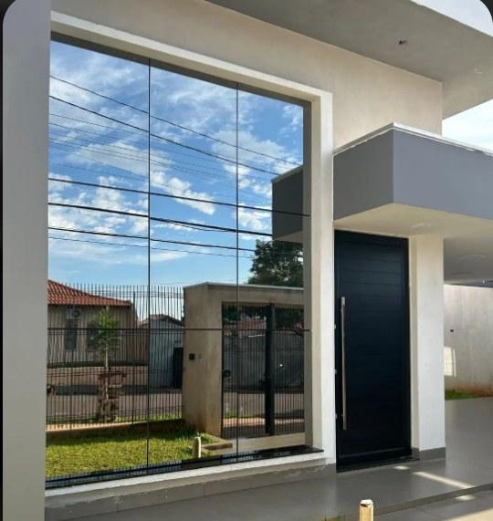
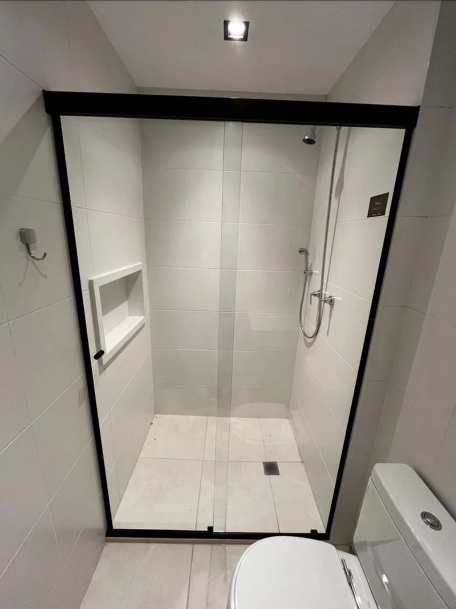
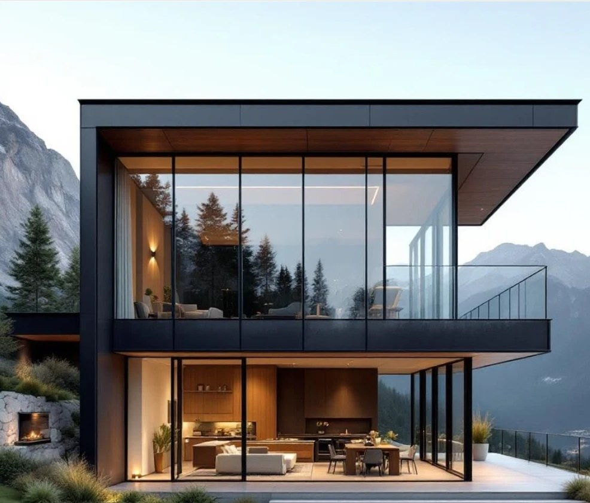
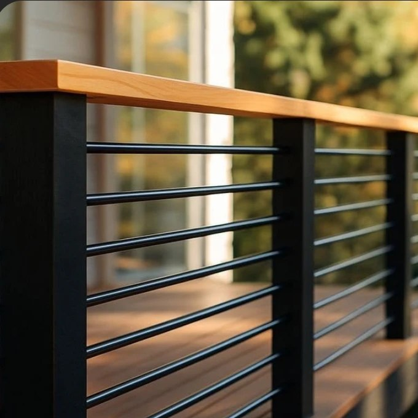
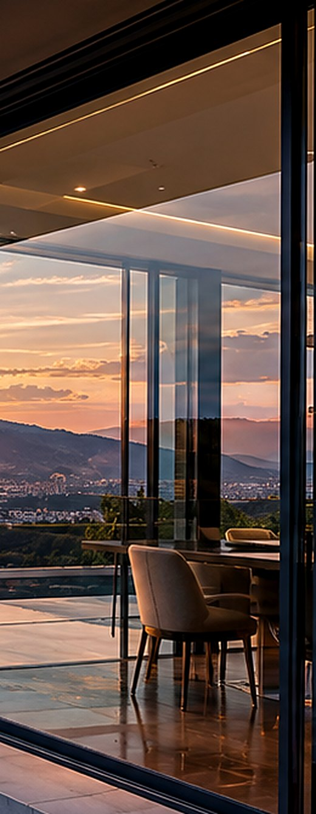
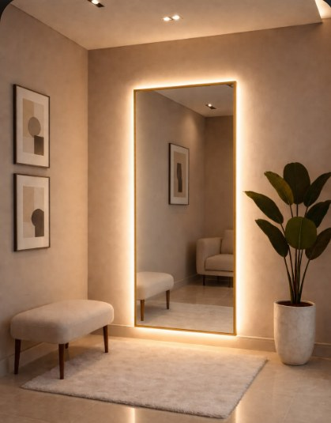
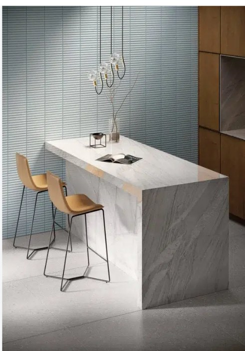
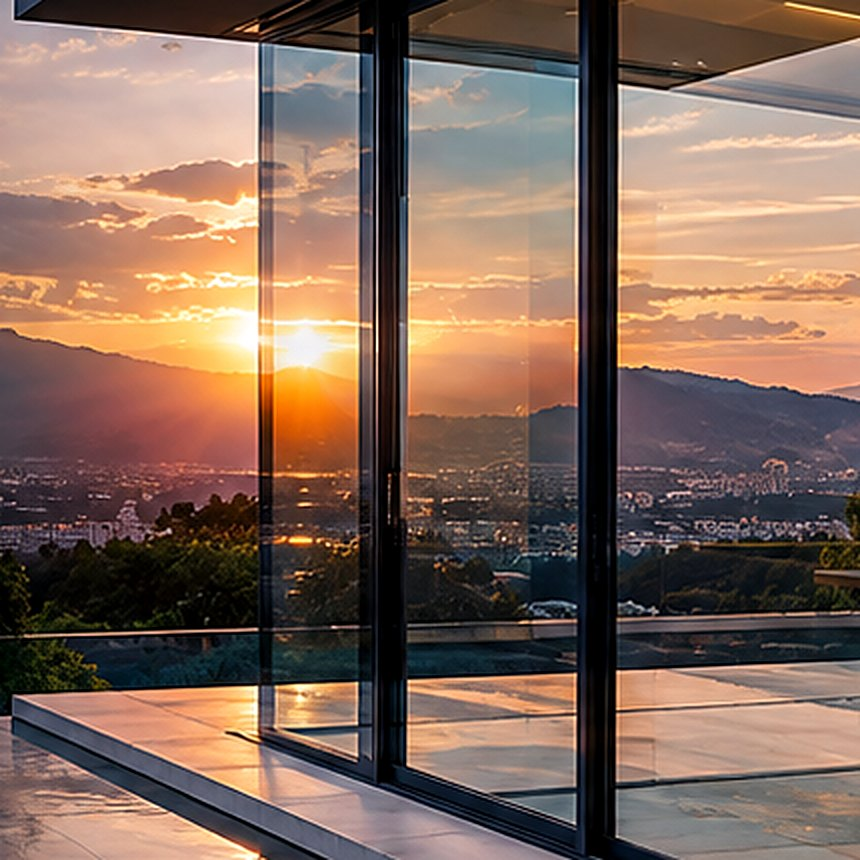

Tradição consolidada
Experiência que gera confiança em cada projeto entregue.
Bacabal — MA
+5 anos de história
+2.500 projetos realizados
Atendemos Bacabal e região
1 ano de garantia

Nossa História
Na Porto Glass, trabalhamos com vidros, espelhos, alumínio, mármores e granitos para projetos de construção e reforma. Buscamos oferecer um atendimento próximo, soluções práticas e um serviço feito com cuidado em cada detalhe.
Fundação da Porto Glass, em Bacabal.
Primeiras obras em vidro temperado e espelhos sob medida.
Entrada nas esquadrias de alumínio.
Início do trabalho com mármores e granitos.
Equipe própria de medição e instalação.
Vidros, alumínio e mármores para Bacabal e região.
Experiência que gera confiança em cada projeto entregue.
Profissionais especializados em instalação e acabamento.
Vidros e ferragens selecionados das melhores marcas.
Soluções sob medida para cada ambiente e necessidade.
Tranquilidade do início da obra ao pós-instalação.
Planejamento e pontualidade na entrega do seu projeto.
Segurança garantida com vidros temperados certificados.
Orientação completa para a melhor escolha em vidros.
Processo
Passo 01
Chame no WhatsApp ou preencha o formulário contando o que você precisa.
Passo 02
Visitamos o local ou conferimos as medidas para um orçamento preciso.
Passo 03
Os vidros são cortados e preparados com rigor técnico e material certificado.
Passo 04
Nossa equipe instala no dia combinado, com cuidado e segurança.
Passo 05
Projeto concluído, conferido com você e coberto pela garantia.
Nossos serviços
Vidros, espelhos, alumínio, mármores e granitos — do projeto à instalação, cuidando de cada detalhe.

Vidro temperado com ferragens alinhadas ao projeto.

Pele de vidro para comércio e residência, modulada vão a vão.

Sacadas, escadas e mezaninos com vidro laminado.

De giro, correr ou pivotante, com o vão medido antes do corte.
Janelas, portas e estruturas em alumínio para vedar bem e durar.

Bisotê, lapidação e recortes para o ponto exato da parede.

Bancadas, soleiras, pias e pisos cortados sob medida para a obra.

Divisórias, coberturas, tampos e o que o projeto pedir.
Obra pronta, bastidor da oficina e o dia a dia da equipe.
Dúvidas
Não achou a sua? Chame no WhatsApp que a gente responde.
Falar no WhatsAppDepende do serviço e da fabricação do vidro. Na visita de medição informamos o prazo exato, por escrito, antes de você fechar.
Não. A medição é gratuita em Bacabal e região.
O temperado é mais resistente ao impacto e, se quebrar, vira grãos sem ponta. O laminado tem uma película entre duas chapas e segura os cacos no lugar — por isso é o indicado para guarda-corpo e cobertura.
Sim: 1 ano de garantia no bom funcionamento, na instalação e nas ferragens.
Bacabal e região.
Aceitamos Pix e cartão.
Contato
Conte o que você precisa. Preparamos uma solução pensada para o seu vão.